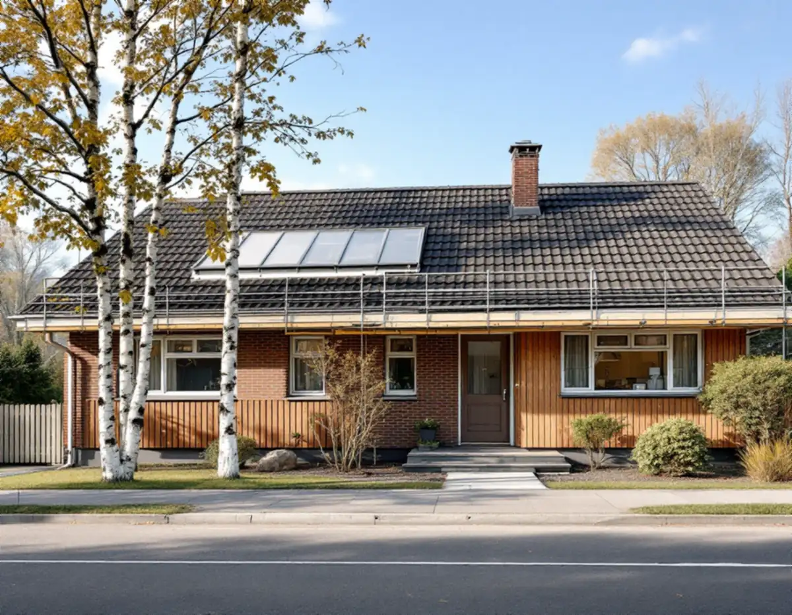
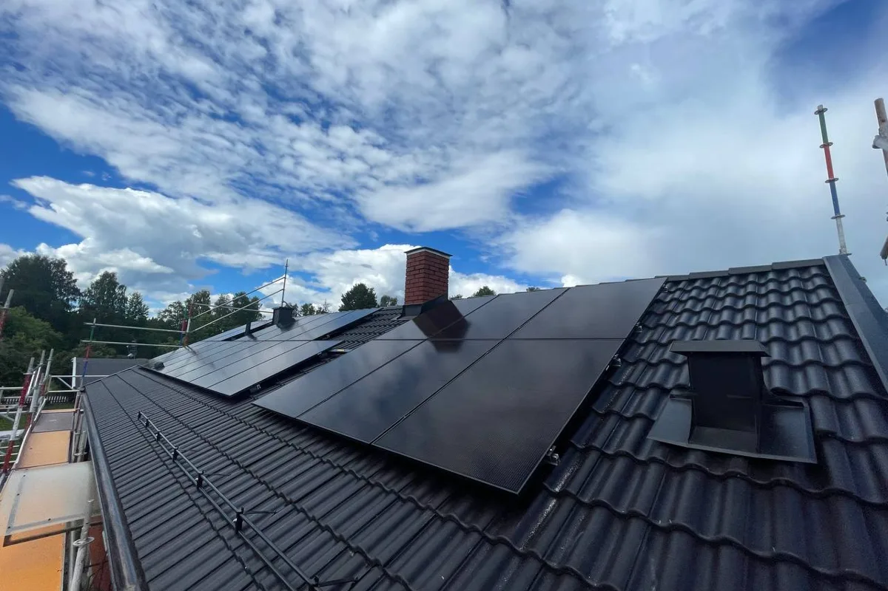
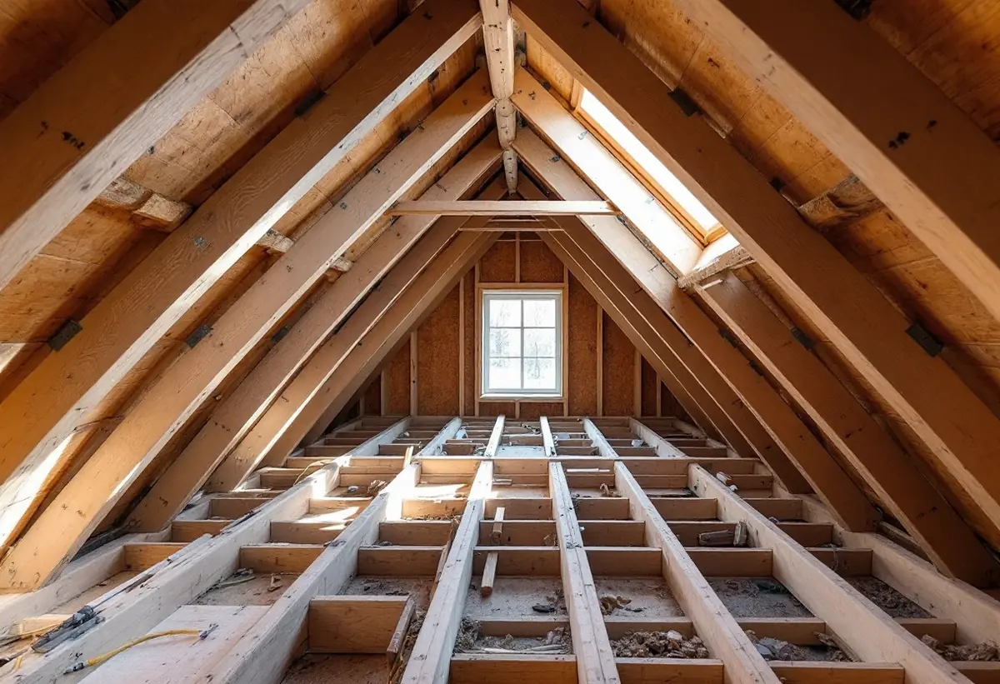

Platsbesök
Tak, takstolar och om solceller ska upp nu eller senare.

Ett nytt tak på en villa i Upplands Väsby kräver i regel inget bygglov.
Skicka gärna en bild på taket.
Något blev fel. Kontrollera uppgifterna eller ring 08 12 410 276.
Pris: från 1 400 kr/m² inkl. material, före ROT-avdrag
Vi tittar på jobbet på plats innan du får offert.
Du ser vad som ingår och vad det kostar.
Vi drar av ROT direkt och sköter ansökan.
Geal Entreprenad AB, Bromma. Org.nr 559303-7566.

Men planerar du solceller i samma veva gäller en särskild regel: i hela den detaljplanerade delen av kommunen krävs bygglov för solceller. Geal Entreprenad AB byter tak i hela Väsby och planerar solcellerna från början.
Enligt plan- och bygglagen är en fasadändring att en byggnad ändrar kulör, fasadbeklädnad eller taktäckningsmaterial eller att dess yttre karaktärsdrag påverkas på annat sätt. Upplands Väsby kommun skriver att det omfattar väggar, tak och andra delar av utsidan. För en- och tvåbostadshus behövs normalt inget bygglov, varken inom eller utanför detaljplan, för att byta taktäckningsmaterial, och det gäller även komplementbyggnader och komplementbostadshus.
Undantagen är när detaljplanen eller områdesbestämmelser har utökad lovplikt för fasadändring, när fasadändringen görs inom ett kulturhistoriskt särskilt värdefullt område och när byggnaden är särskilt värdefull och ändringen ändrar dess karaktär. Varsamhetskravet gäller oavsett lovplikten, påpekar kommunen.

Sedan ändringarna i plan- och bygglagen den 1 december 2025 finns inget generellt krav på bygglov för solenergianläggningar. Men hela Upplands Väsby ligger inom Försvarsmaktens påverkansområde för väderradar, och därför krävs bygglov för solcellsanläggningar i alla delar av kommunen som är detaljplanerade, även när solcellerna annars inte hade krävt lov. Försvarsmakten och Myndigheten för civilt försvar kan ange vilka åtgärder de vill bli underrättade om, men bygglovsplikten kan inte väljas bort.
Delar av kommunens norra del berörs dessutom av ett så kallat MSA-område, hinderbegränsande ytor för flyg kopplade till Uppsala flygplats, som också kan påverka bedömningen. Ska solceller upp på det nya taket söker vi därför bygglovet innan taket läggs, så att fästen och genomföringar kan monteras i rätt läge från början.
En anmälan ska lämnas in om en ändring påverkar byggnadens bärande konstruktion, skriver kommunen. Vid ett takbyte kan det bli aktuellt om takstolar förstärks för ett tyngre material eller för solpaneler, eller om en bärande del måste bytas. Då behövs startbesked innan arbetet börjar.
Vi bedömer takstolarna när det gamla taket är av, och ser vi att något bärande behöver ändras tar vi in en konstruktör och gör anmälan innan vi fortsätter. Skadad råspont och läkt byts som en del av takbytet. Om husens takmaterial och epoker i Väsby kan du läsa under takrenovering i Upplands Väsby.
K-märkt är ingen juridisk term, skriver kommunen. En byggnad kan vara kulturhistoriskt värdefull genom att vara byggnadsminne, vara skyddad i detaljplan, ingå i ett riksintresse för kulturmiljövården, vara utpekad i en inventering eller vara uppförd före 1920 med bibehållen karaktär. Den behöver inte vara utpekad i förväg, och förvanskningsförbudet gäller även åtgärder som inte kräver lov eller anmälan.
Kommunen har tagit fram ett kommunövergripande kunskapsunderlag för kulturmiljö, en uppdatering av det äldre kulturmiljöprogrammet från 1988, som beskriver byggnader och miljöer som kommunen bedömt som särskilt värdefulla. För byggnadsminnen är det Länsstyrelsen som ger tillstånd till ändringar. Om plåtdetaljer och takavvattning kan du läsa under plåtslagare i Upplands Väsby och om våra tjänster i stort under takläggare i Upplands Väsby.
Tak, takstolar och om solceller ska upp nu eller senare.
Detaljplan, kulturvärden och om bygglov för solceller behövs.
Rivning, underlag, ytskikt, plåt och förberedelser för solceller.
Bygglov för solceller och anmälan om stommen berörs.
Gammalt tak rivs, underlaget ses över och nytt tak läggs.
Vi går igenom taket och plåtdetaljerna med dig.
Byte och reparation av takpannor och hängrännor på ett småhus ger rotavdrag enligt Skatteverket, liksom att byta plåttak och stuprör och att montera och montera ner byggnadsställningar. Du ska äga bostaden när arbetet görs och helt eller delvis bo i den.
Avdraget är högst 30 procent av arbetskostnaden, högst 50 000 kronor per person och år och högst 75 000 kronor tillsammans med rutavdrag. Material och resor ger inget avdrag. Geal drar avdraget direkt på fakturan.
Takets yta och lutning, materialet, hur mycket underlag och takstolar som behöver åtgärdas, plåtdetaljer och om fästen för solceller ska monteras samtidigt. Läs mer i vad kostar ett takbyte. Efter ett gratis platsbesök får du ett skriftligt kostnadsförslag.
Byte av tegel-, betong- och plåttak.
Takbyte →Takbyte, takbesiktning och plåtarbeten.
Takläggare i Upplands Väsby →Bollstanäs, Vilunda och Runby.
Takrenovering i Upplands Väsby →Potten, VA-avgiften och Bollstanäs.
Attefallshus i Upplands Väsby →Radhus, suterräng och samfälld VA.
Badrumsrenovering i Upplands Väsby →Karta, VA och tomtgräns.
Byggföretag i Upplands Väsby →Sekelskiftesvillorna längs Gamla vägen.
Fasadmålning i Upplands Väsby →Radhus från 70-talet och hus från bomässan.
Fasadrenovering i Upplands Väsby →Inflygning, trafik och tystare fönster i Väsby.
Fönsterbyte i Upplands Väsby →Kedjehusens fönster, kulör och beslag.
Fönsterrenovering i Upplands Väsby →Kedjehus, suterräng och radon.
Golvläggare i Upplands Väsby →Slipa trägolvet i radhuset på platta.
Golvslipning i Upplands Väsby →Radhus, kedjehus och atriumhus.
Köksrenovering i Upplands Väsby →Radhus, kedjehus och villor i Väsby.
Målare i Upplands Väsby →Rännor, stuprör och radhusplåt i Väsby.
Plåtslagare i Upplands Väsby →Altan, plank och förråd vid radhus och kedjehus.
Snickare i Upplands Väsby →Radhusen och plasttapeten.
Tapetsering i Upplands Väsby →Radhus, kedjehus och utpekade områden.
Tillbyggnad i Upplands Väsby →Äldre villor, radhus och varsamhet.
Totalrenovering i Upplands Väsby →Eller ring 08 12 410 276, mån–fre 08–17.
Skicka gärna en bild på taket.
Något blev fel. Kontrollera uppgifterna eller ring 08 12 410 276.